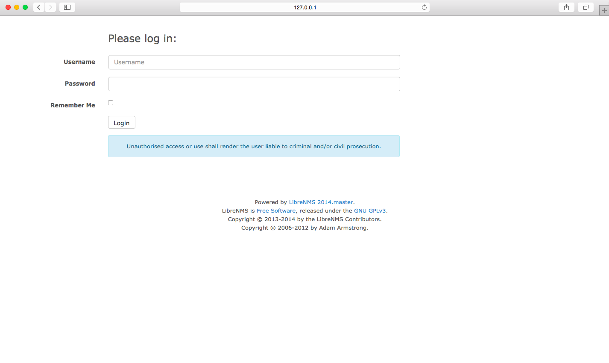

<div id="blueimp-gallery" class="blueimp-gallery">
    <div class="slides"></div>
    <h3 class="title"></h3>
    <a class="prev">‹</a>
    <a class="next">›</a>
    <a class="close">×</a>
    <a class="play-pause"></a>
    <ol class="indicator"></ol>
</div>

<div id="links">
    <a href="images/screenshots/login.jpg" title="Logon page">
        
    </a>
</div>